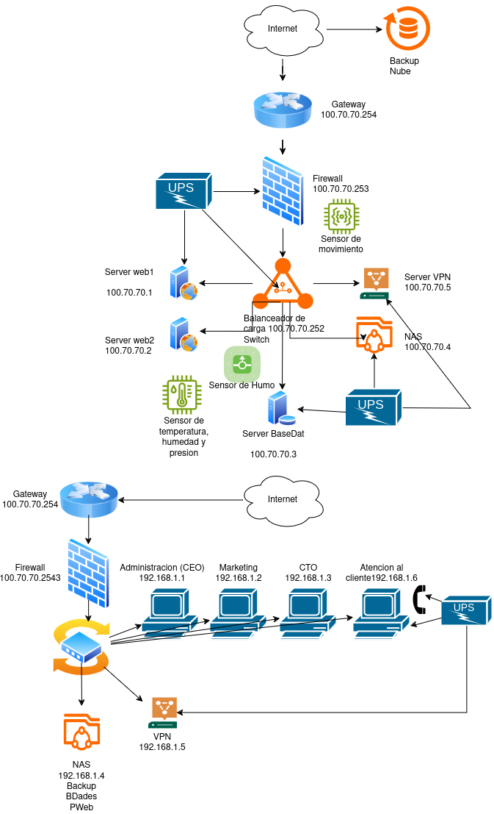

IQ STACK
Hosting Ecológico & Control Solar de Alto Rendimiento.
"Tecnología que funciona, valores que importan."
> LOAD: ECO_MODE
> SOLAR: 92%
Proyecto Joan Coromines
Esta iniciativa nace de la necesidad de plantear una alternativa viable al hosting convencional. Se encuadra como el Trabajo de Fin de Grado (TFG) de estudiantes de Sistemas Microinformáticos y Redes.
El proyecto abarca el dimensionamiento fotovoltaico, la optimización lógica de sistemas abiertos, y el análisis financiero y legal para constituir una sociedad comercial real en el Baix Maestrat.
"Un modelo donde la ecología B2B se sustenta sobre la economía circular y la robustez de la arquitectura limpia."
El Problema
1. Huella de Carbono Invisible
La nube tradicional consume combustibles fósiles. Internet contamina igual que la aviación mundial.
2. Soporte Deshumanizado
Chatbots infinitos e interfaces frías que frustran a comercios y ONGs ante caídas del servicio.
3. Complejidad y Temor Técnico
Interfaces incomprensibles llenas de terminología abrumadora para usuarios locales.
Brecha en el Baix Maestrat
El análisis del tejido local en Benicarló revela que las PYMEs (tiendas, panaderías, despachos) temen migrar a la nube por falta de conocimientos y desconfianza en el soporte digital corporativo.
Los grandes proveedores de hosting ignoran esta desconexión humana y ecológica, compitiendo exclusivamente en precios de gancho. IQSTACK nace para resolver esta doble problemática combinando cercanía y hosting verde real.
La Solución
1. Producto Básico & Alojamiento
Hosting estable con redundancia de disco y backups automáticos.
2. Producto Formal (Valor RSC)
Dominio, SSL y panel con gráficas del impacto ecológico real del cliente.
3. Producto Aumentado (Humano)
Formación de 1 hora y tutoría mensual por videollamada directa.
Eco-Diseño Lógico
Plantillas minimalistas en modo oscuro que optimizan la transferencia de datos y ciclos de CPU del cliente, reduciendo el consumo de batería y de red.
Infraestructura Ecológica
Haz clic en cada nodo del flujo para conocer en detalle su implicación ecológica.
Hardware Reacondicionado (Economía Circular)
Adquirimos servidores empresariales descatalogados. Extendemos su ciclo de vida y evitamos las emisiones de fabricar silicio nuevo.

Mitigación y Ciberseguridad
La topología implementa un aislamiento físico (VLANs) que separa el bus de control fotovoltaico de la red de datos del hosting, previniendo accesos al regulador de carga desde internet (auditoría perimetral por Hugo).
El Equipo Promotor
Sprint Planning & Ceremonias
Cada 2 semanas seleccionamos tareas del Backlog. Hacemos **Daily Stand-ups de 15 minutos** respondiendo: ¿Qué hice?, ¿Qué haré hoy? y ¿Qué me bloquea? para evitar la burocracia inútil.
Sprint Review & Retrospectiva
Al final de cada ciclo, evaluamos el entregable y celebramos la retrospectiva para mejorar la coordinación del equipo promotor y resolver cuellos de botella técnicos.
🛠️ **Trello** (Tablero Kanban de tareas) + **Slack** (Canales de desarrollo) como soporte operativo ágil.
Arquitectura y Robustez
1. Presentación (UI reactiva)
2. API e Interfaces Desacopladas
3. Datos (SQLite portable)
Haz clic en cada capa de la izquierda para ver su rol.
Ventajas de SQLite Portable
*Cero overhead de red:* SQLite no abre sockets TCP locales como Postgres, ahorrando hilos del microprocesador y energía de la CPU del servidor.
*Backups Binarios:* Copiar y respaldar la base de datos es un proceso a nivel de sistema de archivos inmediato, evitando volcados pesados que saturan el disco.
Portabilidad
Toda la base de datos del cliente reside en un único archivo físico. Las migraciones entre servidores fotovoltaicos se realizan en segundos vía comandos estándar `scp`.
Mercado y Competencia
💪 Fortalezas
Energía solar propia, costes mínimos, Scrum ágil.
⚠️ Debilidades
Marca nueva, recursos iniciales propios limitados.
📈 Oportunidades
Demanda Green Hosting B2B, ayudas Kit Digital.
⚡ Amenazas
Guerra comercial low-cost, aumento de ciberataques.
Análisis PESTEL (Económico & Legal)
*Leyes:* Alineados con el Pacto Verde Europeo. Las ayudas de España Digital 2026 subsidian la digitalización de pymes locales. *Luz:* La instalación solar anula la dependencia del mercado de energía mayorista volátil.
Estrategia de Mitigación Porter
*Rivalidad:* Evitamos guerra de precios. Ofrecemos videollamadas mensuales.
*Sustitutos (Wix/Shopify):* Mitigamos su impacto educando al cliente sobre la importancia de ser propietario de sus archivos y no estar atado a "jardines cerrados".
Sostenibilidad Financiera
• 60% Hardware y placas solares
• 15% Notaría, legal y registro
• 15% Campaña marketing SEM
• 10% Fondo de Maniobra inicial
| Mes | Gastos Acum. | Ventas Acum. | Estado |
|---|---|---|---|
| Mes 1 | 7.800 € | 10 € | Pérdida |
| Mes 3 | 8.400 € | 1.410 € | Pérdida |
| Mes 6 | 9.300 € | 4.510 € | Pérdida |
| Mes 9 | 10.200 € | 8.010 € | Pérdida |
| Mes 11 | 10.800 € | 10.610 € | Cruce (Aprox) |
| Mes 12 | 11.100 € | 12.010 € | Beneficio |
• **Ratios:** Endeudamiento nulo. Solvencia excelente al financiarse exclusivamente mediante capital propio (4.000€) y campaña de Crowdfunding/Preventas locales (3.800€).
Impacto Social
Colaboración con ONGs
Tarifas sociales del 20% de descuento y apoyo técnico prioritario en campañas.
Acompañamiento a Comercios
Tutorías de formación básica para disolver la brecha cognitiva de internet.
Alianza con Estudiantes
Hosting y recursos gratuitos para pruebas de prototipos del Joan Coromines.
Estatutos y Registro Mercantil Central
Certificación del nombre de la sociedad mercantil.
Notaría e Inscripción Provincial
Elevación a escritura pública ante Notario y registro en Castellón.
Hacienda (AEAT)
Solicitud de NIF provisional y alta de actividad IAE.
IQ STACK
la huella que queremos evitar."
1. Viabilidad Técnica Solar
Demostrada por el consumo óptimo del hardware reciclado Dell/HP bajo Linux.
2. Viabilidad Económica Lean
Estructura bootstrapping flexible sin apalancamientos bancarios de riesgo.
3. Viabilidad Social Directa
Mercado validado de PYMEs dispuestas a pagar por un soporte humano real.